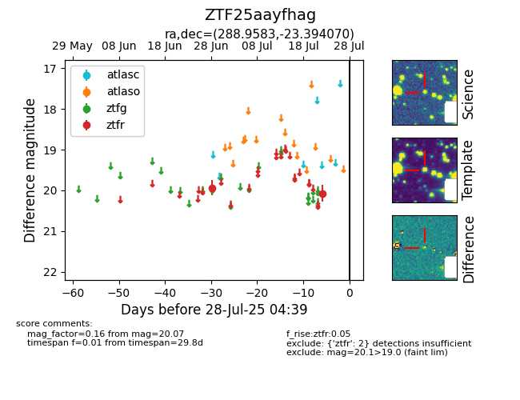

Target ZTF25aayfhag at 2025-07-28 04:39, see:
FINK: fink-portal.org/ZTF25aayfhag
Lasair: lasair-ztf.lsst.ac.uk/objects/ZTF25aayfhag
ALeRCE: alerce.online/object/ZTF25aayfhag
alt names
ZTF25aayfhag (ztf,fink)
coordinates:
equatorial (ra, dec) = (288.9583,-23.39407)
galactic (l, b) = (14.2313,-15.53533)
photometry
last ztfr=20.07
2 ztfr detections
